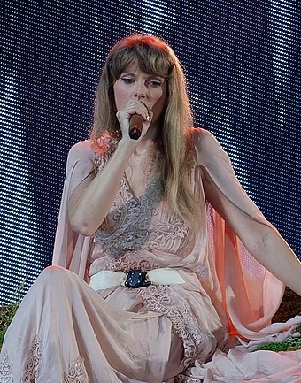

Taylor Alison Swift (born December 13, 1989) is an American
singer-songwriter. Her versatile artistry, songwriting, entrepreneurship, marketability, and support
for
the Kansas City Chiefs have influenced the music industry, popular culture, and politics, and her
life
is a subject of widespread media coverage.
Swift began professional songwriting at 14. She signed with Big Machine Records in 2005 and achieved
prominence as a country pop singer with the albums Taylor Swift (2006), Fearless (2008), and Speak
Now
(2010). The singles "Teardrops on My Guitar", "Love Story" and "You Belong with Me" were crossover
successes on country and pop radio formats and brought Swift mainstream fame.
Her fourth studio album, Red (2012), experimented with electronic elements and featured her first
Billboard Hot 100 number-one single, "We Are Never Ever Getting Back Together". Swift recalibrated
her
image from country to pop with 1989 (2014), a synth-pop album supported by the chart-topping songs
"Shake It Off", "Blank Space", and "Bad Blood". Media scrutiny inspired the hip-hop-influenced
Reputation (2017) and its number-one single "Look What You Made Me Do".
After signing with Republic Records in 2018, Swift released the eclectic pop album Lover (2019) and
the
autobiographical documentary Miss Americana (2020). She explored indie folk styles on the 2020
albums
Folklore and Evermore, subdued electropop on Midnights (2022), and re-recorded four albums subtitled
Taylor's Version[a] after a dispute with Big Machine. These albums spawned the number-one songs
"Cruel
Summer", "Cardigan", "Willow", "Anti-Hero", "All Too Well", and "Is It Over Now?". Her Eras Tour
(2023–2024) and its accompanying concert film became the highest-grossing tour and concert film of
all
time, respectively. Swift has directed several music videos and films such as Folklore: The Long
Pond
Studio Sessions (2020) and All Too Well: The Short Film (2021).
Early Life
Taylor Alison Swift was born on December 13, 1989, in West Reading, Pennsylvania. She is named after
singer-songwriter James Taylor Her father, Scott Kingsley Swift, is a former stockbroker for Merrill
Lynch and her mother, Andrea Gardner Swift , worked for a time as a mutual fund marketing executive.
Taylor has a younger brother, actor Austin Swift.
At age nine, Swift became interested in musical theater and performed in four Berks Youth Theatre
Academy
productions. She also traveled regularly to New York City for vocal and acting lessons. Swift later
shifted her focus toward country music, inspired by Shania Twain's songs, which made her "want to
just
run around the block four times and daydream about everything".
When Swift was around 12 years old, musician Ronnie Cremer taught her to play guitar. Cremer helped
with
her first efforts as a songwriter, leading her to write "Lucky You".[29] In 2003, Swift and her
parents
started working with New York based talent manager Dan Dymtrow. With his help, Swift modeled for
Abercrombie & Fitch as part of their "Rising Stars" campaign, had an original song included on a
Maybelline compilation CD, and met with major record labels
The Eras Tour

In March 2023, Swift embarked on the Eras Tour, a retrospective tour covering all her studio albums.
Media outlets extensively covered the tour's cultural and economic impact, and its US leg broke
the record for the most tickets sold in a day. Ticketmaster received public and political
criticisms for mishandling the tour's ticket sales. The Eras Tour became the highest-grossing
tour in history, collecting over $1 billion. Its concert film, released to theaters
worldwide on October 13, 2023, grossed over $250 million to become the highest-grossing concert
film, and was nominated for the Golden Globe Award for Cinematic and Box Office
Achievement. Swift's music releases, touring, and related activities culminated in an
unprecedented height of popularity post-pandemic. Music Business Worldwide remarked that she
entered a "new stratosphere of global career success" in 2023.
Discography
- Taylor Swift (2006)
- Fearless (2008)
- Speak Now (2010)
- Red (2012)
- 1989 (2014)
- Reputation (2017)
- Lover (2019)
- Folklore (2020)
- Evermore (2020)
- Midnights (2022)
Re-recorded Albums
- Fearless (Taylor's Version) (2021)
- Red (Taylor's Version) (2021)
- Speak Now (Taylor's Version) (2023)
- 1989 (Taylor's Version) (2023)